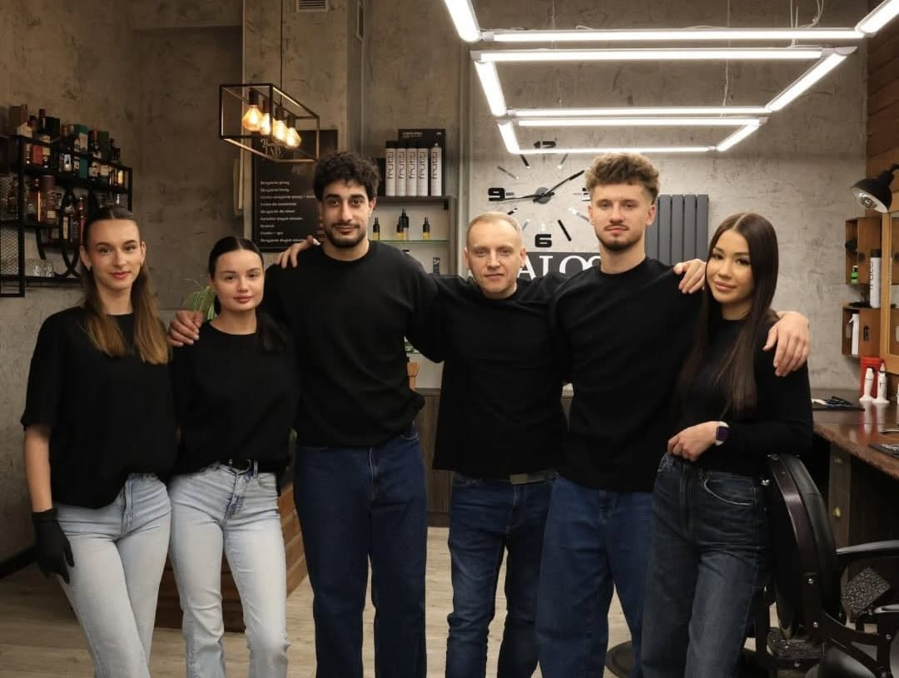
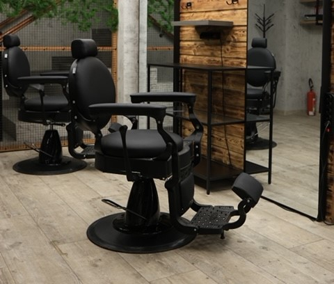
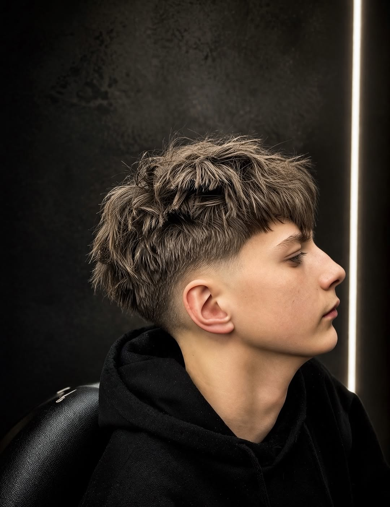
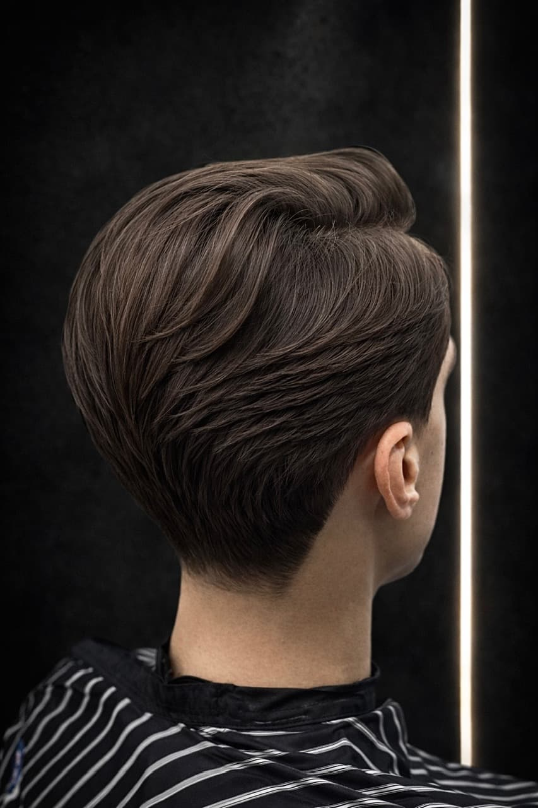
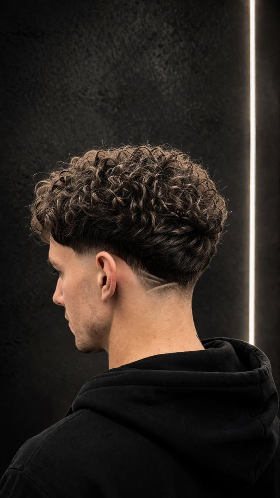
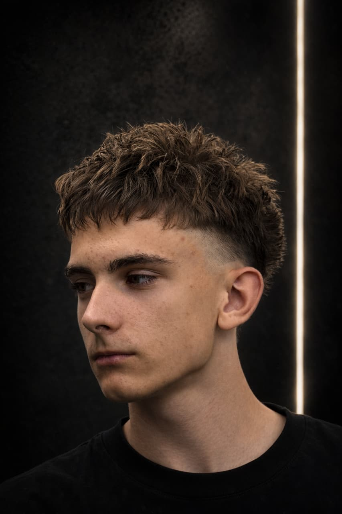
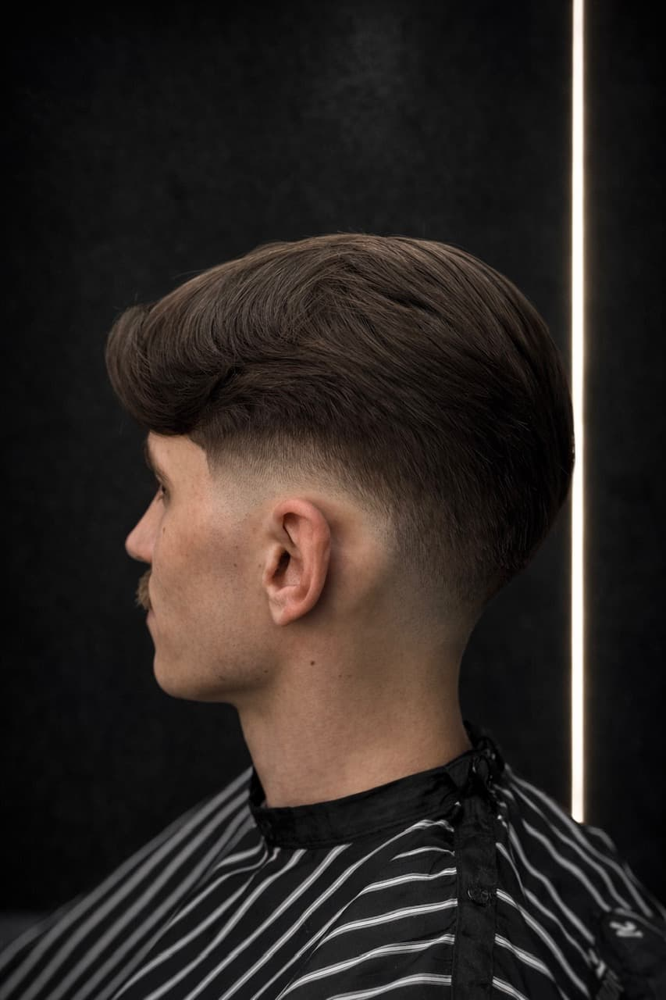

O nas
Jesteśmy zespołem doświadczonych barberów działających w centrum Wrocławia, przy ul. Poniatowskiego 7e oraz Cybulskiego 3. Stawiamy na jakość, precyzję i indywidualne podejście do każdego klienta. Ponad 1400 opinii na Booksy z oceną 5,0 mówi samo za siebie. Nasz barbershop to miejsce, w którym możesz się zrelaksować i wyjść z fryzurą, która podkreśli Twój styl.

Szkolenie Barberskie Wrocław
Intensywny kurs od podstaw — w 5 tygodni zbudujesz umiejętności potrzebne do pracy jako barber. Więcej szczegółów udzielamy przez kontakt mailowy lub telefoniczny.
Kurs barberski
Od zera do zawodu
- Od zera do zawodu 5 tygodni intensywnej nauki — bez wymagań wstępnych
- Pełny warsztat Maszynka, nożyczki, brzytwa, hot towel
- Prowadzący z wieloletnim stażem Uczysz się od aktywnych barberów

Coworking
Jedyny coworking barberski w centrum Wrocławia. Wynajmij fotel, prowadź własną działalność i pracuj kiedy chcesz — bez prowizji, bez kompromisów.
- Własna działalność gospodarcza — rozliczenie B2B
- Stała miesięczna stawka — bez prowizji i procentów
- Klucze do lokalu — dostęp 24/7, pracujesz kiedy chcesz
- Ścisłe centrum Wrocławia — duży ruch pieszy, wygodny dojazd
Usługi i Cennik
Strzyżenie
- Strzyżenie męskie / Men's haircut100 zł
- Strzyżenie męskie ze zniżką STUDENT/UCZEŃ90 zł
- Buzz Cut90 zł
- Strzyżenie maszynką na jedną długość70 zł
- Strzyżenie długich włosów120 zł
- Strzyżenie męskie z tonowaniem siwizny160 zł
Broda
- Strzyżenie brody70 zł
- Broda HOT SHAVE130 zł
- Broda + tonowanie130 zł
HOT SHAVE
- Golenie HOT SHAVE (głowa lub twarz)130 zł
Tonowanie siwizny
- Tonowanie siwizny (włosy lub broda)60 zł
- Tonowanie siwizny COMBO (włosy i broda)130 zł
Pakiety COMBO
- COMBO 1 (strzyżenie męskie + broda)150 zł
- COMBO 1 + tonowanie siwizny210 zł
- COMBO 2 (strzyżenie + Broda HOT SHAVE)210 zł
- COMBO 3 (strzyżenie + Broda HOT SHAVE + tonowanie)260 zł
Inne
- Modelowanie włosów30 zł
Galeria




